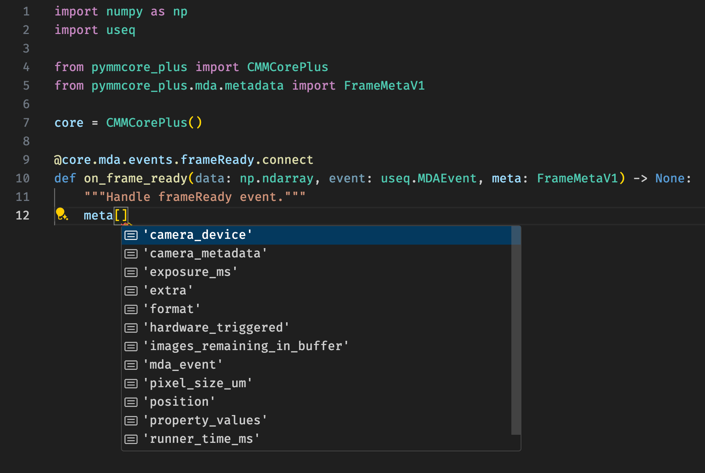

Metadata Schema#
This page defines the schema for the metadata dicts emitted during the
course of an Multi-dimensional Acquisition (MDA).
These are not classes (and should not be imported outside of a
typing.TYPE_CHECKING clause), but rather are typing.TypedDict
definitions that outline the structure of objects that are passed to the
sequenceStarted and
frameReady callbacks in an
MDA. One use case for these definitions is to provide type hints for the
arguments to these callbacks, which is both handy for looking up the structure
of the metadata and for static type checking.

Primary Metadata Types#
pymmcore_plus.metadata.SummaryMetaV1
#
Complete summary metadata for the system.
This is the structure of the summary metadata object that is emitted during the
sequenceStarted event of
an MDA run. It contains general information about the system and all of the
devices.
It may be generated outside of a running mda sequence as well using
pymmcore_plus.metadata.summary_metadata
Keys:
| Name | Type | Description |
|---|---|---|
format |
Literal['summary-dict']
|
The format of this summary metadata object. |
version |
Literal['1.0']
|
The version of this summary metadata object. |
datetime |
str
|
The date and time when the summary metadata was generated. This is an ISO 8601
formatted string, including date, time and offset from UTC:
|
devices |
tuple[DeviceInfo, ...]
|
Information about all loaded devices. |
system_info |
SystemInfo
|
General system information. |
image_infos |
tuple[ImageInfo, ...]
|
Information about the current image structure. |
config_groups |
tuple[ConfigGroup, ...]
|
Groups of device property settings. |
pixel_size_configs |
tuple[PixelSizeConfigPreset, ...]
|
Pixel size presets. |
position |
Position
|
Current position in 3D space. |
mda_sequence |
useq.MDASequence
|
NotRequired. The current MDA sequence. |
extra |
dict[str, Any]
|
NotRequired. Additional information, may be used to store arbitrary user info. |
pymmcore_plus.metadata.FrameMetaV1
#
Metadata for a single frame.
This is the structure of the summary metadata object that is emitted during the
frameReady event of
an MDA run. It contains information about the frame that was just acquired. By
design, it is relatively lightweight and does not contain the full system state.
Values that are not expected to change during an MDA sequence should be looked up
in the summary metadata.
It may be generated outside of a running mda sequence as well using
pymmcore_plus.metadata.frame_metadata
Keys:
| Name | Type | Description |
|---|---|---|
format |
Literal['frame-dict']
|
The format of this frame metadata object. |
version |
Literal['1.0']
|
The version of this frame metadata object. |
pixel_size_um |
float
|
The pixel size in microns. |
camera_device |
str
|
The label of the camera device used to acquire the image. |
exposure_ms |
float
|
The exposure time in milliseconds. |
property_values |
tuple[PropertyValue, ...]
|
Device property settings. This is not a comprehensive list of all device properties, but only those that may have changed for this frame (such as properties in the channel config or light path config). |
runner_time_ms |
float
|
Elapsed time in milliseconds since the beginning of the MDA sequence. |
position |
Position
|
NotRequired. The current stage position(s) in 3D space. This is often slow to retrieve, so its inclusion is optional and left to the implementer. |
mda_event |
useq.MDAEvent
|
NotRequired. The MDA event object that commanded the acquisition of this frame. |
hardware_triggered |
bool
|
NotRequired. Whether the frame was part of a hardware-triggered sequence.
If missing, assume |
images_remaining_in_buffer |
int
|
NotRequired. The number of images remaining to be popped from the image buffer (only applicable for hardware-triggered sequences). |
camera_metadata |
dict[str, Any]
|
NotRequired. Additional metadata from the camera device. This is unstructured and may contain any information that the camera device provides. Do not rely on the presence of any particular keys. |
extra |
dict[str, Any]
|
NotRequired. Additional information, may be used to store arbitrary user info or additional metadata. |
Supporting Types#
pymmcore_plus.metadata.DeviceInfo
#
Information about a specific device.
Keys:
| Name | Type | Description |
|---|---|---|
label |
str
|
The user-provided label of the device. |
library |
str
|
The name of the device adapter library (e.g. "DemoCamera" or "ASITiger"). |
name |
str
|
The name of the device, as known to the adapter. (e.g. "DCam" or "XYStage") |
type |
str
|
The type of the device (e.g. "Camera", "XYStage", "State", etc...) |
description |
str
|
A description of the device, provided by the adapter. |
properties |
tuple[PropertyInfo, ...]
|
Information about the device's properties. |
parent_label |
str
|
Not Required. The label of the parent device, if any. This will be missing for hub devices and other devices that are not peripherals. |
labels |
tuple[str, ...]
|
Not Required. The labels of the device, if it is a state device. |
child_names |
tuple[str, ...]
|
Not Required. The names of the child (peripheral) devices, if it is a hub device. |
is_continuous_focus_drive |
bool
|
Not Required. Whether the device is a continuous focus drive. If missing,
assume |
focus_direction |
Literal['Unknown', 'TowardSample', 'AwayFromSample']
|
Not Required. The direction of focus movement. Will be missing if device is not a Stage device. |
is_sequenceable |
bool
|
Not Required. Whether the device is sequenceable. If missing, assume |
pymmcore_plus.metadata.SystemInfo
#
General system information.
Keys:
| Name | Type | Description |
|---|---|---|
pymmcore_version |
str
|
The version of the PyMMCore library. |
pymmcore_plus_version |
str
|
The version of the PyMMCore Plus library. |
mmcore_version |
str
|
The version of the MMCore library. (e.g. |
device_api_version |
str
|
The version of the device API.
(e.g. |
device_adapter_search_paths |
tuple[str, ...]
|
The active search paths for device adapters. This may be useful to indicate the nightly build of device adapters, or other information that isn't in the version numbers. |
system_configuration_file |
str | None
|
The path of the last loaded system configuration file, if any. |
primary_log_file |
str
|
The path of the primary log file. |
sequence_buffer_size_mb |
int
|
The size of the circular buffer available for storing images during hardware-triggered sequence acquisition. |
continuous_focus_enabled |
bool
|
Whether continuous focus is enabled. |
continuous_focus_locked |
bool
|
Whether continuous focus is currently locked. |
auto_shutter |
bool
|
Whether auto-shutter is currently active. |
timeout_ms |
int | None
|
Not Required. The current timeout in milliseconds for the system. The default timeout is 5000 ms. |
pymmcore_plus.metadata.ImageInfo
#
Information about the image format for a camera device.
Keys:
| Name | Type | Description |
|---|---|---|
camera_label |
str
|
The label of the corresponding camera device. |
plane_shape |
tuple[int, ...]
|
The shape (height, width[, num_components]) of the numpy array that will be returned for each snap of the camera. This will be length 2 for monochromatic images, and length 3 for images with multiple components (e.g. RGB). |
dtype |
str
|
The numpy dtype of the image array (e.g. "uint8", "uint16", etc...) |
height |
int
|
The height of the image in pixels. |
width |
int
|
The width of the image in pixels. |
pixel_format |
Literal['Mono8', 'Mono10', 'Mono12', 'Mono14', 'Mono16', 'Mono32', 'RGB8', 'RGB10', 'RGB12', 'RGB14', 'RGB16']
|
The GenICam pixel format of the camera. See PixelFormat and https://docs.baslerweb.com/pixel-format#unpacked-and-packed-pixel-formats for more information. |
pixel_size_config_name |
str
|
The name of the currently active pixel size configuration. |
pixel_size_um |
float
|
The pixel size in microns. |
magnification_factor |
float
|
Not Required. The product of magnification of all loaded devices of type MagnifierDevice. If no devices are found, or all have magnification=1, this will not be present. |
pixel_size_affine |
tuple[float, float, float, float, float, float]
|
Not Required. Affine Transform to relate camera pixels with stage movement,
corrected for binning and known magnification devices. The affine transform
consists of the first two rows of a 3x3 matrix, the third row is always assumed
to be |
roi |
tuple[int, int, int, int]
|
Not Required. The active subarray (ROI: region of interest) on the camera, in
the form |
multi_roi |
tuple[list[int], list[int], list[int], list[int]]
|
Not Required. The active subarrays (ROIs: regions of interest) on the camera,
in the form |
pymmcore_plus.metadata.ConfigGroup
#
A group of configuration presets.
Keys:
| Name | Type | Description |
|---|---|---|
name |
str
|
The name of the config group. |
presets |
tuple[ConfigPreset, ...]
|
A collection of presets, each of which define a set of device property settings that can be applied to the system. |
pymmcore_plus.metadata.ConfigPreset
#
A group of device property settings.
Keys:
| Name | Type | Description |
|---|---|---|
name |
str
|
The name of the preset. |
settings |
tuple[PropertyValue, ...]
|
A collection of device property settings that make up the preset. |
pymmcore_plus.metadata.PixelSizeConfigPreset
#
A specialized group of device property settings for a pixel size preset.
Keys:
| Name | Type | Description |
|---|---|---|
name |
str
|
The name of the pixel size preset. |
settings |
tuple[PropertyValue, ...]
|
A collection of device property settings that make up the pixel size preset. |
pixel_size_um |
float
|
The pixel size in microns. |
pixel_size_affine |
tuple[float, float, float, float, float, float]
|
Not Required. Affine Transform to relate camera pixels with stage movement, corrected for binning and known magnification devices. The affine transform consists of the first two rows of a 3x3 matrix, the third row is always assumed to be 0.0 0.0 1.0. |
pixel_size_dxdz : float Not Required. The angle between the camera's x axis and the axis (direction) of the z drive for the given pixel size configuration. This angle is dimensionless (i.e. the ratio of the translation in x caused by a translation in z, i.e. dx / dz). If missing, assume 0.0. pixel_size_dydz : float Not Required. The angle between the camera's y axis and the axis (direction) of the z drive for the given pixel size configuration. This angle is dimensionless (i.e. the ratio of the translation in y caused by a translation in z, i.e. dy / dz). If missing, assume 0.0. pixel_size_optimal_z_um : float Not Required. User-defined optimal Z step size is for this pixel size config. If missing, assume 0.0.
pymmcore_plus.metadata.PropertyInfo
#
Information about a single device property.
Keys:
| Name | Type | Description |
|---|---|---|
name |
str
|
The name of the property. |
value |
str | None
|
The current value of the property, if any. |
data_type |
Literal['undefined', 'float', 'int', 'str']
|
The data type of the |
is_read_only |
bool
|
Whether the property is read-only. |
allowed_values |
tuple[str, ...]
|
Not Required. The allowed values for the property, if any. Consumers should not depend on this field being present. |
is_pre_init |
bool
|
Not Required. Whether the property is pre-init. If missing, assume |
limits |
tuple[float, float]
|
Not Required. The limits of the property, if any. If missing, the property has no limits. |
sequenceable |
bool
|
Not Required. Whether the property is sequenceable. If missing, assume
|
sequence_max_length |
int
|
Not Required. The maximum length of a sequence for the property, if applicable. Will be missing if the property is not sequenceable. |
pymmcore_plus.metadata.PropertyValue
#
A single device property setting.
This represents a single device property setting, whether it be an "active" value, or an intended value as a part of a configuration preset.
Keys:
| Name | Type | Description |
|---|---|---|
dev |
str
|
The label of the device. |
prop |
str
|
The name of the property. |
val |
Any
|
The value of the property. |
pymmcore_plus.metadata.Position
#
Represents a position in 3D space and focus.
Keys:
| Name | Type | Description |
|---|---|---|
x |
float
|
Not Required. The X coordinate of the "active" XY stage device. May be missing if there is no current XY stage device. |
y |
float
|
Not Required. The Y coordinate of the "active" XY stage device. May be missing if there is no current XY stage device. |
z |
float
|
Not Required. The coordinate of the "active" focus device. May be missing if there is no current focus stage device. |
all_stages |
tuple[StagePosition, ...]
|
Not Required. The positions of all stage devices (both inactive and active
devices that are represented by |
pymmcore_plus.metadata.StagePosition
#
Represents the position of a single stage device.
Functions#
In most cases, the metadata dicts described above will be received as an
argument to either the
sequenceStarted or
frameReady callbacks in an
MDA. However, they can also be generated with the following functions.
pymmcore_plus.metadata.summary_metadata(core: CMMCorePlus, *, mda_sequence: useq.MDASequence | None = None, cached: bool = True, include_time: bool = True) -> SummaryMetaV1
#
Return a summary metadata for the current state of the system.
See pymmcore_plus.metadata.SummaryMetaV1 for a description of the dictionary format.
Source code in pymmcore_plus/metadata/functions.py
45 46 47 48 49 50 51 52 53 54 55 56 57 58 59 60 61 62 63 64 65 66 67 68 69 70 71 | |
pymmcore_plus.metadata.frame_metadata(core: CMMCorePlus, *, cached: bool = True, runner_time_ms: float = -1, camera_device: str | None = None, property_values: tuple[PropertyValue, ...] = (), include_position: bool = False, **kwargs: Unpack[_OptionalFrameMetaKwargs]) -> FrameMetaV1
#
Return metadata for the current frame.
Source code in pymmcore_plus/metadata/functions.py
74 75 76 77 78 79 80 81 82 83 84 85 86 87 88 89 90 91 92 93 94 95 96 97 | |